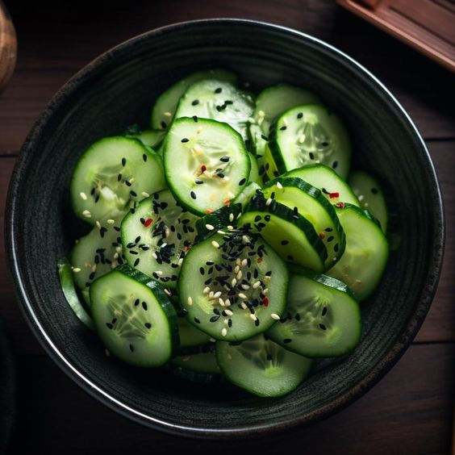
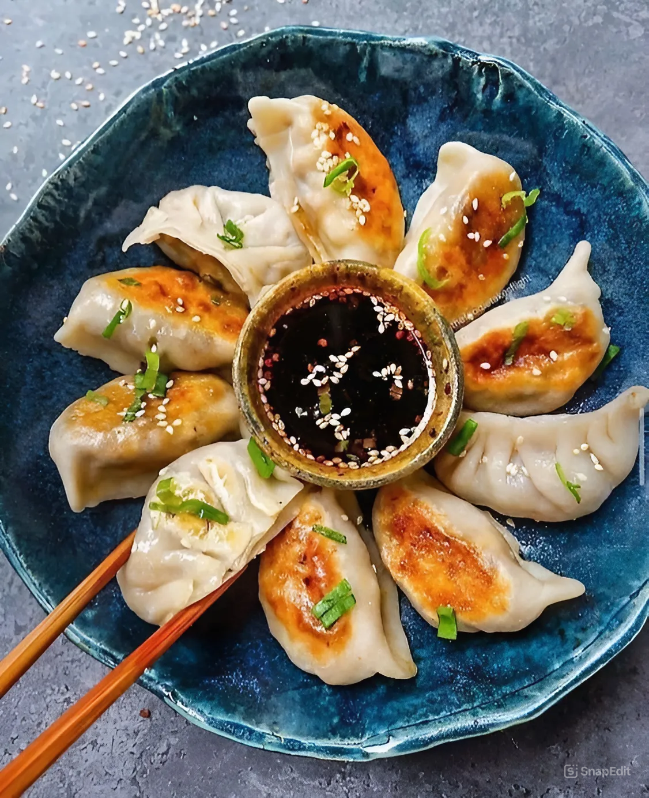
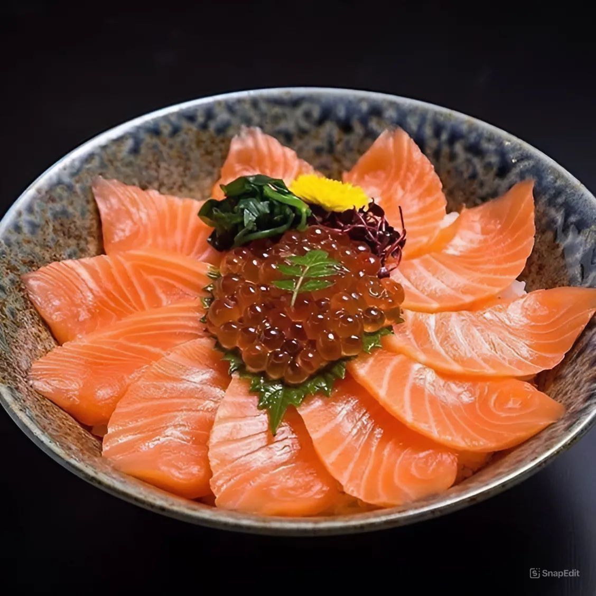
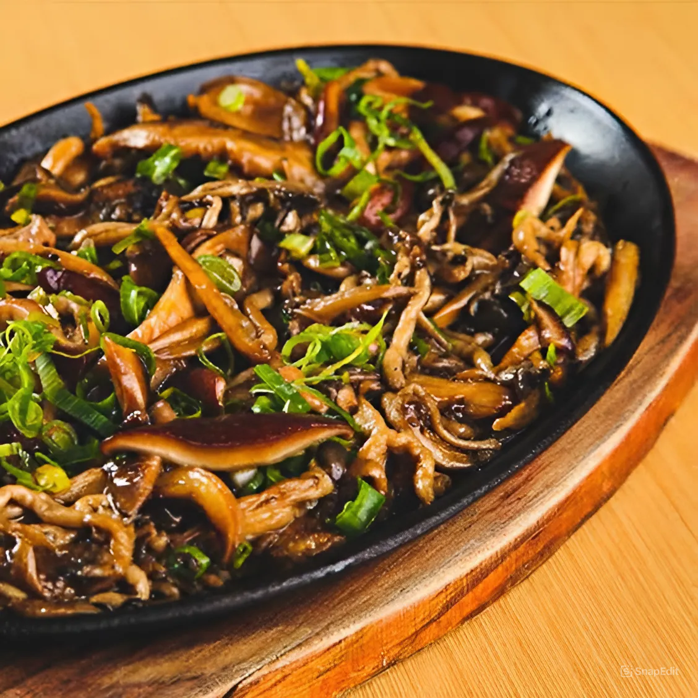

Temaki de Salmão, Temaki de Atum, Temaki de Camarão,
Temaki California, Temaki de Salmão Skin, Temaki Vegano
e Temaki de Uni (Ovo de ouriço-do-mar).
tartar
Prato de carne ou peixe cru picado,
temperado com condimentos como cebola,
limão e molho de soja. É servido fresco,
geralmente com torradas ou batatas fritas.
combinado
Prato que reúne diferentes itens, como sushis, sashimis e temakis, oferecendo uma variedade de sabores típicos da culinária japonesa.

sunomono
Salada japonesa de pepino agridoce, marinada em vinagre de arroz com açúcar e sal. Leve e refrescante, é servido como entrada ou acompanhamento.

Guioza
Espécie de pastelzinho japonês, geralmente recheado com carne de porco, legumes e temperos, e pode ser frito, cozido ou steamado. É servido com molho de soja para acompanhar.
Rolinho Primavera
Aperitivo asiático feito
com vegetais enrolados em massa,
frito ou servido fresco. É acompanhado
geralmente de molho agridoce ou de soja.

sashimi
Composto por fatias finas de peixe cru, geralmente servido com acompanhamentos como molho de soja, wasabi e gengibre em conserva.

Shimeji
Cogumelo japonês de sabor delicado,
geralmente refogado com molho de soja e alho.
É usado em pratos como risotos, sopas e acompanhamentos.